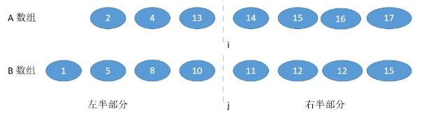
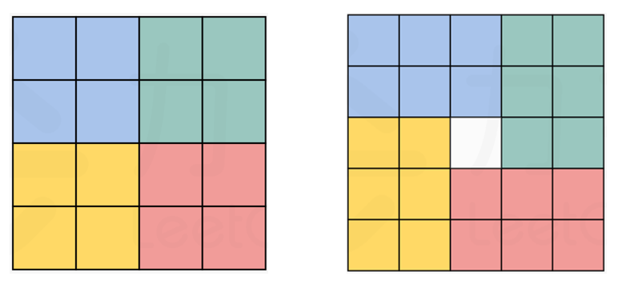

Array
Array is a data structure that O(1) when search, O(n) when insert.
Basic syntax
create/del a list
l = []l = list()del loperations
## slicel[beg:end:step] # when step <0, beg need to > end.# inplace operations, returns None!!l.append()l.extend() # input is sequence, so "a" is ok, but 3 is not.l.reverse() # l[::-1], return Nonel.pop() # delete the last number### bisect# for a orderred list l, we can use py3 built-in binary select function.i = bisect_left(l,x) # the first index >= xj = bisect_right(l,x) # the first index > x# eg1, l=[1,5,9], x=7 -> i=j=2# eg1.1, l=[1,5,9], x=10 -> i=j=3## -> x not in l, returns appropriate insert position# eg2, l=[1,5,9], x=9 -> i=2, j=3# eg3, l=[1,5,5,9], x=5 -> i=1,j=3bisect_left(l,x,begin,end,key = lambda x: x[1]) # [begin, end)Problems
1. Binary Search
704. Binary Search sorted unique numbers
Details need to remember:
Initializing boundary needs to cover all elements:
l=0, r=length-1Calculating mid needs to consider integer overflow
mid = (l+r)//2 # very easy to overflowmid = l + (r-l)//2 # better, but still possiblemid = (l+r) >> 1 # the bestPick left
midor rightmid(according to the different if...else condition)mid = (l+r) >> 1 # left midmid = (l+r+1) >> 1 # right midit depends on how you write the
if ... else.Just imagine there are only 2 elements left, and the procedure falls into the 'else block'. The wrong mid will result in an infinite loop because neither
lnorrmakes a move. You need to make sure that each move shrinks ther-l.left mid uses l to go over
mid = (l+r) >> 1if target > nums[mid]:l = mid + 1 # mid is not the answerelse:r = mid # mid might be the answerafter exit:
l==rand returns the index that its value >= the target (the right way to insert) -> except for target lying in the right of the list.Left mid uses
lto go over to the target(l=mid+1). If the target doesn't exist in the list, the pointers both stop at the first number bigger than it.0 1 2 3 4 5, target: 2.5,
l==r==3; target: 6,l==r==5right mid uses r to go over
mid = (l+r+1) >> 1if target < nums[mid]:r = mid - 1else:l = midafter exit:
l==rand returns the index that its value <= the target -> except for target lying in the left of the list.Right mid uses
rto go over the target(r=mid-1). If the target doesn't exist in the list, the pointers both stop at the last number smaller than it.0 1 2 3 4 5, target: 2.5,
l==r==2; target: -1,l==r==0While loop
while(l<r):...return -1 if l > r or nums[l] != target else lafter exit: the list is empty -> l=0,r=-1 ->
l > r; non-empty ->l==r
34. First and last index sorted nonunique numbers
When the numbers are non-unique, the exit condition changes a little:
0 1 2 3 3 3 4 , target: 3
left mid: when hit the target number,
rwill keep moving left until meetslexit condition: if target in the list,
l==r==the first target num indexright mid: when hit the target number,
lwill keep moving right until meetsrexit condition: if target in the list,
l==r==the last target num index
Solution 1: sort reversely then count,
Solution 2: construct hash map to record the number of papers that cited i times.
Solution 3: Binary search.
As the h-index ranges from 0 to n. We can do the binary search to find the correct h-index.
left mid or right mid?
When we compute a mid, we assume it is the current h-index. Then we iterate citations to count the number of papers that cited >= mid times.
When the cnt >= mid, the final h-index could > mid and could also = mid.
When the cnt < mid, the final h-index is definitely < mid.
So the if else loop should be:
if cnt < mid:r = mid - 1else:l = midThat is a right mid formula. So
mid = (l+r+1)>>1
The array [4,5,6,7,0,1,2] is partially in order. We can still use binary search in this condition, as each time we split the array, half of it must be in order. We judge whether the target in the ordered half. If so, binary search, if not, move to the other half and continue. How to judge which half is in order? -> nums[l] < nums[r].
- Initially, l=0 r=n-1, r means the rightest index of nums. So in each sorted half, we keep r as its rightest index.
Solution 1, O(log(m+n)):
The problem is to find the k-th minimum number among the two arrays.
We first iteratively divide k with 2: new_k = k//2, and abandon the smaller new_k numbers in one array. (Judge nums1[new_k-1] < nums2[new_k-1]?).
Solution 2, O(log(min(m,n))):
nums1 need to be shorter than nums2.
Use i to split the nums1, j to split the nums2. Make the number of nums in the left part equal or one larger than the right part. We seach i in binary search, and judge whether nums1[i-1] < nums2[j]. If not, search i in the left part; if so, search i in the right part. The possible medians if the max(nums1[i-1],nums2[j-1]) and min(nums1[i],nums2[j]). Record each possible median pair, when l > r, break.

2. Two pointers
In summary, two pointers method is used for:
- Cutting down a
'for loop', from to . - Needing one pointer as index, another to process elements -> same direction
- Convenient to process together of head and end -> opposite direction
Tips:
- We can process from right to the left (especially when having vacancies in the right part of the array). -> finishing the task in one iteration.
- Two pointers walk in the same direction: the slow one to keep the result list, the fast one to iterate the list.
- Two pointers walk in the opposite direction: left for searching in sequence, right for picking the element to replace.
We can record the product of the prefix and suffix in the ans[], and calculate the ans in the same time.
We use l, r pointers walking in the opposite direction.
- Fill ans with 1.
- When they haven't meet, the ans[l] means the product of prefix 0~l-1; ans[r] means the product of suffix r+1~n-1.
- When they meet and surpass each other, the ans[l] is not 1 anymore. It means the product of suffix l+1~n-1. We can get the correct ans by multiplying it with the currently accumulated product of prefix. Likewise, ans[r] is updated in the same way.
We can use p0,p1 point to the places that need to be swaped. Use i to traverse the numbers.
p1 needs to update together with p0. If p0 is updating now and p0 < p1, means a '1' is swaped away. Make an extra swap between current num with nums[p1].
A bit like problem 84. In this problem, we can use two pointers l, r to represent the left and right boundary. When shrink the boundary, it is always better to move the shorter one, as it determines the height of the contained water. If move the higher boundary, as the width shrink, the contained water could only be less.
Also, we set left and right pointers. In the mean time, we keep the lmax, rmax to record the current max height of left part and right part during moving.
We judge the shorter one between lmax and rmax, because the longer one can definitely help trap the water. Assume currently the shorter one is lmax, then the trapped water on the l index should be lmax-h[l].
3. Sliding Window
- l and r move in the same direction (start at the same place).
- while r explore for a bigger sum, l moves to shrink the window size.
# template for sliding windowsleft = 0, right = 0;while (left < right && right < s.size()) { # pre processing xxx # expand the right boundary window.add(s[right]); right++; # shrink the left boundary while (window needs shrink) { # shrink the window window.remove(s[left]); left++; }}4. Rotate Array
- Solution 1: construct an additional list.
- Solution 2: reverse the array from 0 to n. Then reverse nums[:k] and nums[k:].
- Solution 3: use a temp variable to record the next replaced number. Replacing the numbers with a step size of k and in a circular manner.
5. Moore Voting Algorithm(find majority)
If there is a majority element in an array, it will always remain in the lead, even after encountering other elements.
We pick a temporary majority (candidate) first. Each time we meet the same candidate, we increase the count by 1. Else we decrease by 1. Once the count reach to 0, we assign the current num as the new candidate.
candidate, count = 0, 0for num in nums: if count == 0: candidate = num dcount += 1 if num == candidate else -1return candidate6. Array tricks
Inplace operation on the array
We can do inplace operations on the input nums array to avoid space complexity. Notice that the first missing positive can either be in [1,n] or equal to n+1.
Solution 1:
We modify the nums as a hashmap: nums[i] means whether the i+1 num in nums.
- Traverse once to select the numbers that <=0 and >n. These numbers don't affect our results. -> Modify them to the value of n+1.
- Traverse again to tag the nums[i] that have i+1 in original nums. -> When ever meet a num in [1,n] or [-n,-1], modify nums[num-1] to -abs(nums[num-1]).
- Traverse third time to select the first positive nums[i], return i+1 if there is, else return n+1.
Solution 2:
We change the numbers in [1,n] to the correct position num-1. The first i that nums[i] != i+1 would be the positive. Otherwise n+1 would be the positive.
- How to change? swap the current num1 and the num2 on its correct position. Continue swap num2 with num3 and so on.
- What if two nums are equal? Stop the swap loop and move to the next i. The excessive one would finally be placed on the position that we need to return.
Find rule
We can traverse from back to top, once meet a pair (x,y) that x < y, break the traverse. We swap the x with the number in nums[y:] that first bigger than x. At this time, nums[y:] is in descending order, reverse it.
7. Matrix
Keep left, right, top, bottom as the current boundaries. For each loop, we traverse the left->right, top->bottom, right->left, bottom->top and modify the possible left,right,top,bottom.
Set four directions = [(0,1),(0,-1),(1,0),(-1,0)] to calculate the next possible indexes. Judge the indexes after add on each direction.
Solution 1: Split blocks
Rotating the matrix is equal to rotating blocks in a circle.

Generally, for element at (row,col), after rotation, it should moves to (col,n-1-row). We have the equation . Continually, we have the following four equations that split the Matrix into four groups.

Solution2: Flip horizontally and along the main diagnol
- Step1: swap row[i] and row[n-1-i] for i in range(n//2).
- Step2: swap
M[i][j]andM[j][i].
Solution1: binary search on each row ->
Solution2: Z-search / Binary search tree ->
- So we can search from the top right num.

Each dfs search for a island, traverse every element in the matrix.
In dfs, if current element != 1, return; else modify the element into 2. dfs the four directions.
Calculate the number of islands
- Calculate the dfs time.
Calculate the maximum area
- add the area in dfs, and update the ans = max(ans,area)
Calculate the perimeter
- add the boundary in dfs, if element out of the matrix or element == 0, return 1; elif element == 2, return 0; else continue dfs.
Sort algorithm
Quick sort ->
Select a pivot to put smaller number left to it and bigger number right to it.
- pick a pivot ->
random index - two pointers l and r moving in the oppose direction, making the left part smaller than pivot and the right part bigger.
- swap a[l] and a[r], return the index of where it is partitioned.
Attention:
- It is not stable. -> the sequence of same elements is not fixed.
- If a is sorted, index == l will result in , so random index is needed.
- If there are many repeated nums, line 7-8 can not be >= and <=. If so, the partitioned sub-arrays are always one longer than another. eg. 1,2,2,2,2,2|4,7,5
def quicksort(a,l,r): if l >= r: return index = random.randint(l,r) # [l,r] pivot = a[index] # pivot = random.choice(a) i, j = l, r while i <= j: # we need to judge whether a[i]/a[j] > pivot when i==j. while a[j] > pivot: j -= 1 # can not include equal. while a[i] < pivot: i += 1 # can not include equal. if i > j: break # Attention a[i], a[j] = a[j], a[i] j -= 1 # prevent j stuck at the pivot num. i += 1 # prevent i stuck at the pivot num. quicksort(a,l,i-1) # i will go over the split line, so the left part is i-1. quicksort(a,i,r)k-th element:
Solution 1: heap -> O(nlogk)
Maintain a heap with the size of k.
Solution 2: quick select -> O(n)
To find the k-th largetst num, we can abandon the half that k-th element not in during quick sort.
def quickselect(l,r): if l >= r: # there's only one element left in this part -> the k-th element. return nums[l] index = random.randint(l,r) pivot = nums[index] i, j = l, r while i <= j: while nums[j] > pivot: j -= 1 while nums[i] < pivot: i += 1 if i > j: break nums[i], nums[j] = nums[j], nums[i] i += 1 j -= 1 if k > (n-i): # only sort the part that k-th element in. return quickselect(l,i-1) else: return quickselect(i,r)ans = quickselect(0,len(nums)-1)k most element:
Solution 1: heap -> O(nlogk)
Construct a min heap with k element, compare the remaining elements with the root. If the root is smaller, heappop and heappush the current element. If current element is smaller, do nothing. In the end, the elements in the heap is the answer.
Solution 2: quick select -> O(n)
too clumsy.
Solution 3: bucket sort-> O(n)
Make the frequency to be the bucket index i, the num of this frequency append to the bucket[i]. Then just traverse from the back.
fremap = collections.defaultdict(int)for num in nums: fremap[num] += 1n = len(nums)bucket = [[] for _ in range(n+1)]for key, val in fremap.items(): bucket[val].append(key)ans = []for i in range(n,-1,-1): if bucket[i]: if k: index = min(len(bucket[i]),k) ans.extend(bucket[i][:index]) k -= index else: breakreturn ans
Merge Sort ->
Divide the array into two halves, sort each half, and then merge the sorted halves back together.
- Stable
def mergesort(a,l,r): if l >= r: return mid = (l+r)>>1 mergesort(a,l,mid) mergesort(a,mid+1,r) # merge two sorted sub-array i, j = l, mid+1 temp = [] while i <= mid and j <= r: if a[i] <= a[j]: temp.append(a[i]) i += 1 else: temp.append(a[j]) j += 1 temp += a[i:mid+1] temp += a[j:r+1] a[l:r+1] = tempHeap Sort ->
- not stable.
Heap: for each node, its value is alway bigger/smaller than its sons' value.
- Create a heap : create a binary tree and heapify it.
- heapify : start from bottom-right node. Compare the sons and the father node, swap the biggest among them with father node. If swap lson and father, continuely check down whether lson is bigger than its sons.
- heap pop : Remove the root and move the bottom right node to the root. Check whether new root is the biggest, if not, adjust to the bottom.
We don't need to build a binary tree actually. We can manipulate the corresponding indexes.
def heapify(a,i,end): j = 2*i+1 # lson while j <= end: if j+1 <= end and a[j+1] > a[j]: j += 1 if a[i] < a[j]: a[i], a[j] = a[j], a[i] i = j j = 2*i+1 else: break # don't need to swap -> already a heapn = len(a)# create heap: from the last non-leaf node to rootfor i in range(n//2-1,-1,-1): # O(n), the calculated result heapify(a,i,n-1)# heap pop: sway the root(maxval) to the list tailfor j in range(n-1,-1,-1): a[0], a[j] = a[j], a[0] heapify(a,0,j-1)